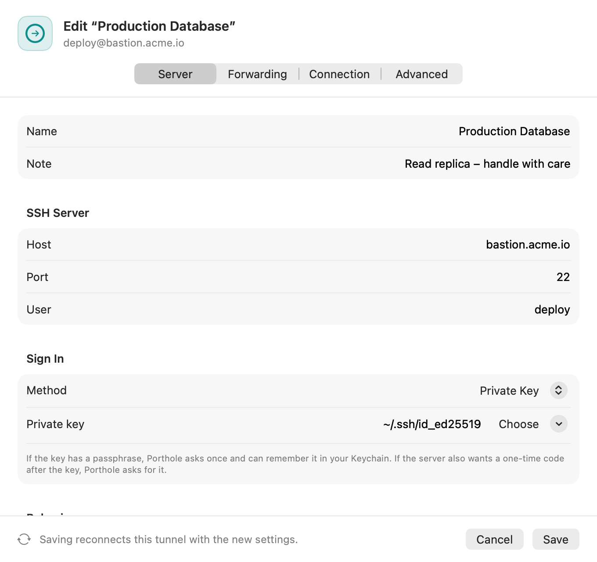
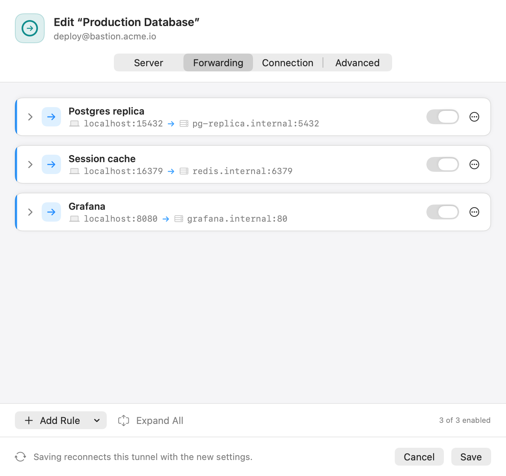
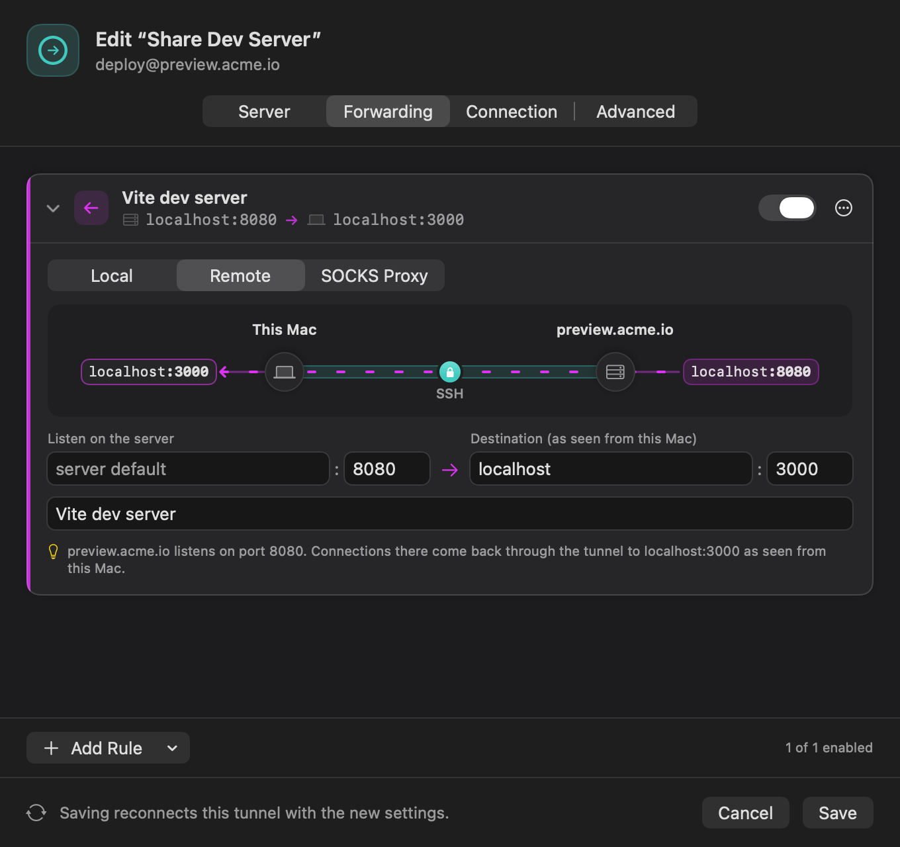
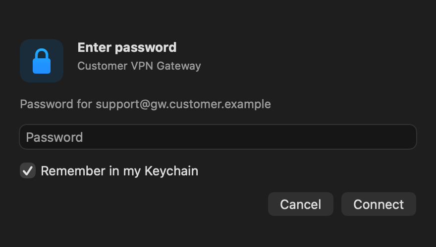
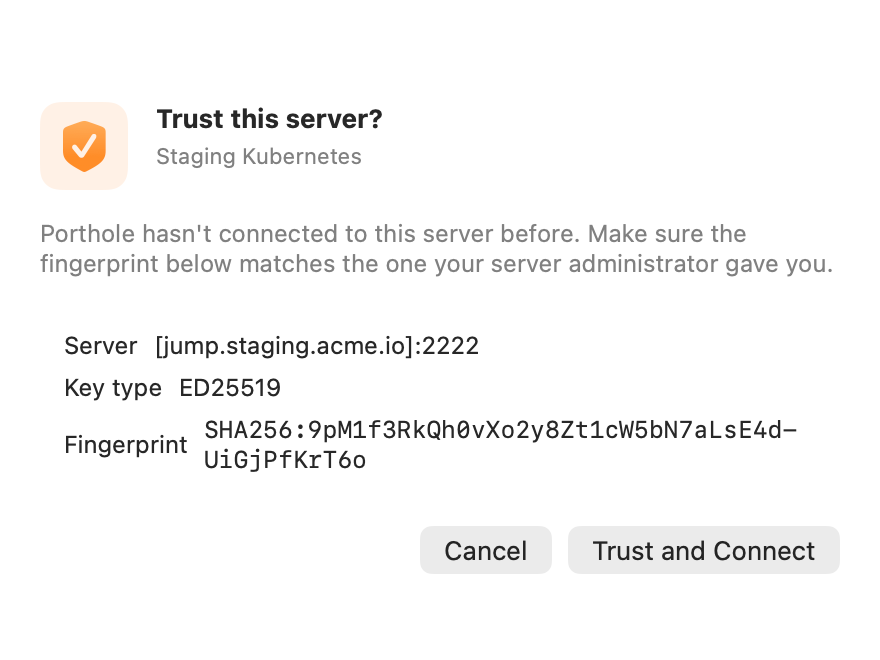
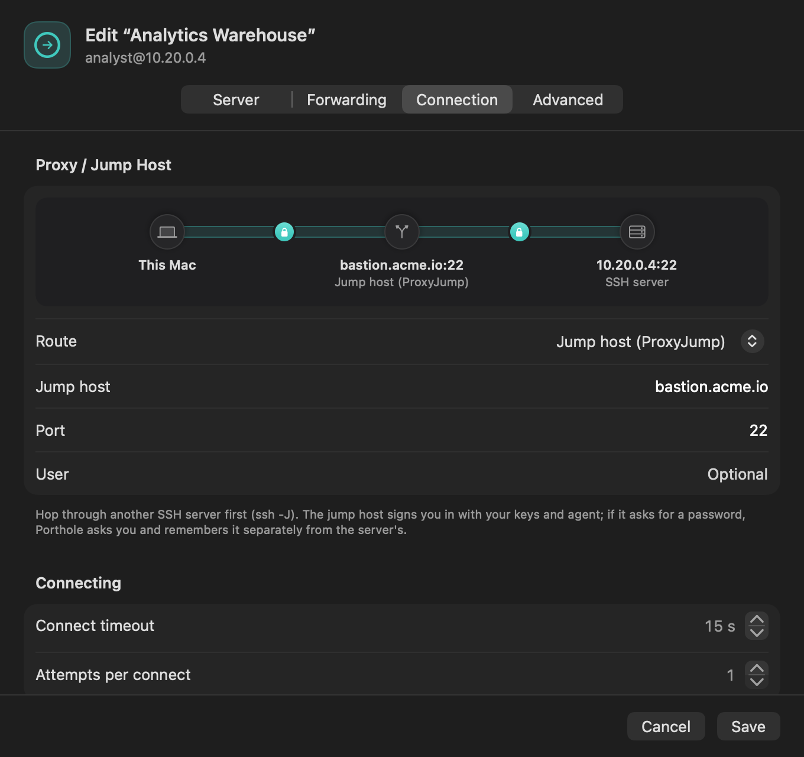
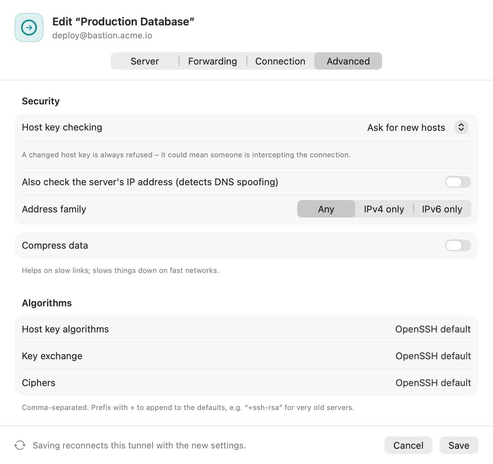
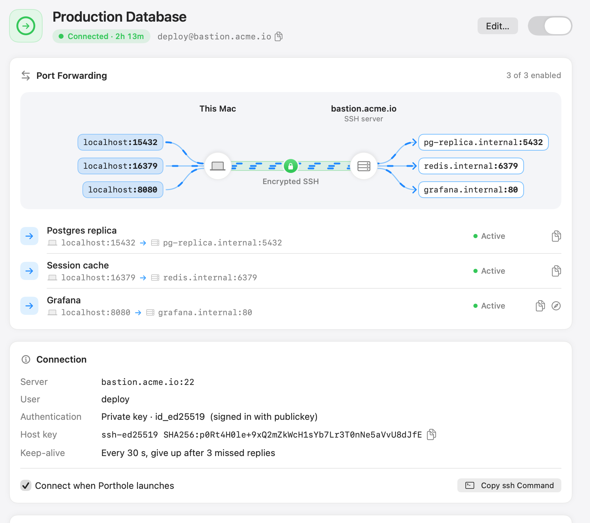
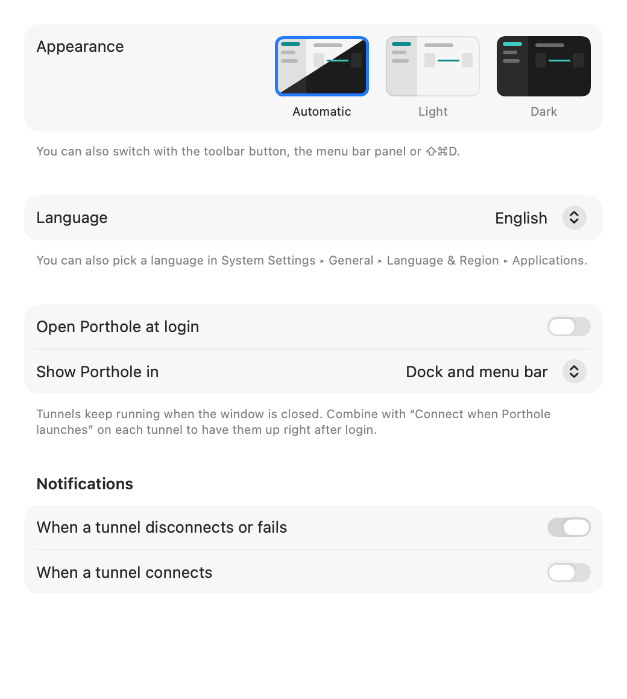

Install
Requirements
- macOS 14 Sonoma or later.
- A Mac with Apple silicon (M1 or later). Porthole is a native arm64 app and doesn't run on Intel Macs.
- Nothing else to install. Porthole drives the OpenSSH client that comes with macOS,
/usr/bin/ssh, which is updated along with the system.
Download and install
- Download
Porthole-1.0.0.zip(1.3 MB) from the download section. - Double-click the zip to unpack Porthole.app.
- Drag Porthole.app into your Applications folder.
Opening it the first time
Porthole is currently ad-hoc signed and not notarized by Apple. The first time you open an app like this from the internet, macOS stops it and says it can't verify the developer. Let it through once with these steps, and it opens normally from then on:
- Double-click Porthole. When the warning appears, click “Done” to close it.
- Open System Settings ▸ Privacy & Security and scroll down to the Security section.
- Find the message saying Porthole was blocked and click “Open Anyway” next to it. Click “Open Anyway” again in the dialog that follows, and confirm with your login password.
If you're at home in Terminal, removing the quarantine flag that came with the download does the same thing:
xattr -dr com.apple.quarantine /Applications/Porthole.appOn macOS 14 you can also Control-click Porthole and choose Open from the menu. That no longer works from macOS 15 on; use the steps above instead.
Checking the download
Compute the zip's SHA-256 in Terminal. The result should match this one:
shasum -a 256 ~/Downloads/Porthole-1.0.0.zip697bc77d141e89e911210e3e66555268139e87e73b49bc40207f2b5a9a1430f6
Your first tunnel
Say the database db.internal:5432 can only be reached from the jump server bastion.acme.io. Here's how to bring it to localhost:15432 on your Mac.
-
Press ⌘N or click + in the toolbar. The first time, you can also click “Create a Tunnel” on the welcome screen.
-
On the Server tab, enter a name (anything you like, e.g. “Production database”), the host
bastion.acme.io, port22and userdeploy. Leave the sign-in method at “Automatic (agent & keys)” for now: it uses ssh-agent, the keys in~/.sshand your~/.ssh/config.
-
Switch to the Forwarding tab and click “Add Rule”. Choose Local as the type, listen on
localhost:15432on this Mac, and set the destination (as seen from the server) todb.internal:5432. A small diagram above shows where the rule goes as you type, with a plain-language explanation below it.
-
Click “Create & Connect”. The first time you connect to this server, Porthole shows its fingerprint. If it checks out, click “Trust and Connect” (see Server fingerprints).
-
Once connected, point your database client at
localhost:15432and you're done.
To have the tunnel ready when you start your Mac, tick “Connect when Porthole launches” on the Server tab and turn on “Open Porthole at login” in Settings ▸ General. Tunnels keep running after you close the main window.
Forwarding rules
A tunnel can hold as many rules as you like, and they all share the same SSH connection. Each rule card has a switch in its top-right corner to turn it off on its own; disabled rules are dimmed in the diagram. You can change a rule's type at any time.
Local forwarding ssh -L
Reach a remote service on a local port. Apps on this Mac connect to the port under “Listen on this Mac”; the traffic is forwarded through the SSH server, which connects on to the destination.
- Listen on this Mac
- Address and port, e.g.
localhost:15432. - Destination (as seen from the server)
- A host and port the server can reach, e.g.
db.internal:5432.localhosthere means the server itself.
ssh -N -L 15432:db.internal:5432 deploy@bastion.acme.ioRemote forwarding ssh -R
Share a local service with the server. The server listens on a port you choose; connections that arrive there come back through the tunnel to your Mac and on to the destination. Often used to show a work-in-progress site to colleagues, or to receive webhook callbacks.
- Listen on the server
- Leave the address empty for the server's default, which listens only on the server's own localhost; the port is e.g.
8080. - Destination (as seen from this Mac)
- A service on your Mac, e.g.
localhost:3000.
ssh -N -R 8080:localhost:3000 deploy@preview.acme.io
- For other machines to reach that port on the server, the server's sshd needs
GatewayPorts clientspecified, and “Listen on the server” needs0.0.0.0or*. - Remote ports below 1024 can only be opened when you sign in as root.
- If the remote port is already taken on the server, the server refuses and Porthole reports that the server refused to open the remote port.
SOCKS proxy ssh -D
Browse through the server. A SOCKS4/5 proxy runs on a port on this Mac. Point a browser or app at it and every connection leaves from the SSH server, which is handy for sites and internal addresses that only the server can reach.
- Listen on this Mac
- e.g.
localhost:1080.
Then set the app's proxy to SOCKS5, localhost:1080. In Terminal, for example:
curl --socks5-hostname localhost:1080 https://intranet.acme.ioLet host names resolve on the server side too (curl's --socks5-hostname, or “Proxy DNS when using SOCKS” in a browser) to reach addresses that exist only in the internal DNS.
Presets
The menu next to “Add Rule” has common presets. Pick one, then fill in the destination host:
| Preset | Type | Ports |
|---|---|---|
| PostgreSQL | Local | 5432 → 5432 |
| MySQL / MariaDB | Local | 3306 → 3306 |
| Redis | Local | 6379 → 6379 |
| MongoDB | Local | 27017 → 27017 |
| Web app | Local | 8080 → 80 |
| Remote Desktop | Local | 3389 → 3389 |
| VNC / Screen Sharing | Local | 5901 → 5900 |
| Share local dev server | Remote | server 8080 → this Mac 3000 |
Listening addresses
localhost(the default): only programs on this Mac can connect.0.0.0.0or*: other devices on your network can connect to this port on your Mac too. Use it only when you really need to.- You can also enter the IP address of one of this Mac's network interfaces.
Before connecting, Porthole checks whether the local ports are free. If one is taken, it names the process and its PID. Two rules in the same tunnel using the same port are flagged right away, too.
Signing in
Choose under Sign In ▸ Method on the Server tab:
- Automatic (agent & keys)
- The default. Uses ssh-agent, the keys in
~/.sshand your~/.ssh/config. If the server still asks for a password, Porthole asks you. - Password
- Enter it here, or leave it empty to be asked each time you connect.
- Private Key
- Choose a private key file, e.g.
~/.ssh/id_ed25519. If the key has a passphrase, Porthole asks once and can keep it in your Keychain. If the server also wants a one-time code after the key, Porthole asks for that as well. - Keyboard-Interactive / 2FA
- For servers that ask for one-time codes or other prompts. Porthole shows you each of the server's questions in turn.

Tick “Remember in my Keychain” in the password dialog and you won't have to type it again. Every password and passphrase is kept only in the macOS Keychain. None of them are written to Porthole's settings file or included in exports.
Server fingerprints
The first time you connect to a server, Porthole asks “Trust this server?” and shows the server's address, key type and SHA256 fingerprint. Compare it with the fingerprint your server administrator gave you, and click “Trust and Connect” only if they match.

You can pick a different policy under Advanced ▸ Security ▸ Host key checking:
- Ask for new hosts
- The default. As described above, every new server needs your OK first.
- Trust new hosts automatically
- Remembers a server's key on the first connection without asking, like OpenSSH's
accept-new. - Only known hosts
- Connects only to servers already in
~/.ssh/known_hosts.
Whichever you choose, a server whose host key has changed is always refused, because that can mean someone is intercepting the connection. If you're sure the server was simply reinstalled, delete the old entry and connect again:
ssh-keygen -R bastion.acme.ioIf the server isn't on port 22, write it as ssh-keygen -R "[bastion.acme.io]:2222".
With “Also check the server's IP address” ticked, OpenSSH checks the IP address as well, which catches DNS spoofing.
Proxies and jump hosts
Choose how to reach the SSH server under Proxy / Jump Host ▸ Route on the Connection tab. The route diagram at the top of the tab shows this Mac → proxy or jump host → server.

- Direct connection
- Connects straight to the SSH server.
- Jump host (ProxyJump)
- Connects to another SSH server first and from there to the target server, like
ssh -J. The jump host signs in with your keys and ssh-agent; if it asks for a password, Porthole asks you and saves it separately from the target server's. - SOCKS5 / SOCKS4 proxy
- Connects through a SOCKS proxy, port 1080 by default. Useful behind a strict firewall; you can even go through another Porthole SOCKS tunnel, such as
localhost:1080. - HTTP proxy (CONNECT)
- Connects through an HTTP proxy that supports CONNECT, port 8080 by default.
If the proxy needs a user name and password, enter the user and tick “Proxy requires a password”. That password is kept in the Keychain as well.
Connection and keep-alive
On the Connection tab:
- Connect timeout
- 15 seconds by default; anything from 3 to 120 seconds.
- Attempts per connect
- 1 by default. Only applies when the server is down or unreachable; a server that actively refuses the connection isn't retried.
- Keep-alive
- Every 30 seconds by default, and the connection counts as dropped after 3 unanswered checks, so a dead connection is noticed within about 90 seconds and Porthole reconnects. With keep-alive Off, a dead connection may go unnoticed for a long time.
- Network interface
- Only needed when this Mac is on several networks at once, such as Wi-Fi and a VPN.
Under Behavior on the Server tab:
- Connect when Porthole launches
- Connects this tunnel when you open Porthole.
- Reconnect automatically when the connection drops
- On by default. Retries after 2, 4, 8, 16 and 30 seconds, then every 30 seconds; the count starts over once the connection has been stable for a while. Porthole also refreshes tunnels when your Mac wakes from sleep or the network comes back.
When you change a running tunnel and save, it reconnects with the new settings.
Advanced options

- Address family
- Any, IPv4 only or IPv6 only.
- Compress data
- Helps on slow networks, but slows things down on fast ones.
- Algorithms
- Host key algorithms, key exchange and ciphers. Leave them empty for OpenSSH's defaults. Separate entries with commas; start with
+to add to the defaults, e.g.+ssh-rsaunder “Host key algorithms” for a very old server. - Use settings from ~/.ssh/config
- On by default. This host's settings in
~/.ssh/config(IdentityFile, ProxyJump and so on) apply too. - Extra ssh options
- One per line, e.g.
IPQoS throughput. They are passed to ssh as-ooptions and take precedence over the settings above. - Command Preview
- Shows the complete ssh command Porthole runs. When troubleshooting, copy it into Terminal and add
-v.
Everyday use
Main window and route diagram
The tunnel list is on the left, with a search field and filters above it (All, Active, Auto-start and your smart groups). The switch to the right of each tunnel connects and disconnects it. On the right you see the selected tunnel's status, its port forwarding diagram and the live state of each rule; next to each rule you can copy its address, and web rules can be opened straight in the browser.

Each tunnel is drawn as a bow tie:
- The addresses on this Mac's side are on the left and the server's side on the right; every rule meets in one encrypted SSH channel in the middle.
- Filled tags are the ports that listen for connections; outlined tags are where the traffic ends up. Arrows and moving dots show which way data flows; for remote forwarding it flows from the server back to this Mac.
- Colour shows the state: active forwards are coloured by type (local blue, remote purple, SOCKS teal), starting up is orange, not connected is a grey dashed line, and disabled rules are dimmed.
- The lock in the middle of the channel turns green once connected and becomes a red ✕ when the connection fails. When the route goes through a proxy or jump host, the channel is labelled “via …”.
Menu bar
The small porthole in the menu bar shows the overall state: a hollow centre means all disconnected, half-filled means connecting, filled means a tunnel is connected, and a slash means a tunnel failed to connect.
Open the panel to switch each tunnel on or off, or to connect or disconnect them all; in its top-right corner you can switch between light and dark, or open Settings.
Tunnels keep running after you close the main window. Choose “Menu bar only” under Settings ▸ General ▸ Show Porthole in and Porthole stays out of the Dock.

Search and smart groups
The search field filters by name, host and port. Save a filter you use often as a smart group: click the + next to the filters, or choose File ▸ New Smart Group… (⌥⌘N), then enter a name and keywords separated by spaces. Every tunnel whose name, note, host or ports contain all of the keywords appears in the group.
Log
Choose Tunnel ▸ Show Log (⌘L) to follow how the tunnel connects; you can copy or clear the log. OpenSSH's own output stays in English, while common errors and reasons for dropping are explained in your language.
Keyboard shortcuts
| New Tunnel | ⌘N |
| New Smart Group | ⌥⌘N |
| Connect the selected tunnels | ⌘R |
| Disconnect the selected tunnels | ⌘. |
| Connect All | ⌥⌘R |
| Disconnect All | ⌥⌘. |
| Edit | ⌘E |
| Duplicate | ⌘D |
| Copy SSH Command | ⇧⌘C |
| Show Log | ⌘L |
| Delete | ⌘⌫ |
| Import Tunnels | ⇧⌘I |
| Export Selected Tunnels | ⇧⌘E |
| Switch Light/Dark | ⇧⌘D |
| Settings | ⌘, |
Import and export
Moving over from SSH Tunnel
Codinn's SSH Tunnel is Intel-only and won't run on future versions of macOS. Porthole imports its export files:
- In the old SSH Tunnel, select all your tunnels and choose File ▸ Export Selected Tunnels….
- In Porthole, choose File ▸ Import Tunnels… (⇧⌘I) and pick that file.
- Exports don't include passwords. Porthole asks for each one when you first connect; tick “Remember in my Keychain” and you're set.
The original export format isn't publicly documented, so Porthole reads the known fields leniently. Check each tunnel once after importing.
Importing from ~/.ssh/config
Choose File ▸ Import from ~/.ssh/config. Only Host entries with a LocalForward, RemoteForward or DynamicForward are imported, and the imported tunnels keep using each host's settings in ~/.ssh/config. For example:
Host db-tunnel
HostName bastion.acme.io
User deploy
LocalForward 15432 db.internal:5432Export and backup
Choose File ▸ Export Selected Tunnels… (⇧⌘E) or Export All Tunnels…. You can also export all tunnels and smart groups from Settings ▸ Data. Exports don't contain passwords, which stay in your Keychain; after importing on another Mac, enter them on the first connection.
Settings
Choose Porthole ▸ Settings… (⌘,).
- General
- Appearance (automatic, light or dark); the interface language, which takes effect after you click “Restart Now”; opening Porthole at login; showing Porthole in the Dock and menu bar, the Dock only or the menu bar only; and notifications when a tunnel disconnects or fails, or connects.
- Advanced
- Refreshing tunnels after your Mac wakes from sleep, and the ssh executable:
/usr/bin/sshby default, or a Homebrew build such as/opt/homebrew/bin/sshif you need one. - Data
- Importing from SSH Tunnel or
~/.ssh/config, exporting all tunnels and smart groups, and where the settings file lives (with a button to show it in Finder).

The interface comes in 10 languages: English, 简体中文, 繁體中文, 日本語, 한국어, Deutsch, Français, Español, Português (Brasil) and Русский. It follows the system by default; you can also choose a language just for Porthole in System Settings ▸ General ▸ Language & Region ▸ Applications.
Troubleshooting
“Port 15432 is already in use by …”
Another program is using that local port, typically another tunnel, a database running on your Mac, or an ssh started elsewhere. The message names the process and its PID. Quit that program, or give the rule a different local port (e.g. 15433). To look for yourself:
lsof -nP -iTCP:15432 -sTCP:LISTENThe server rejected the login
Check the user name. When signing in with a private key, make sure the matching public key is in the server's ~/.ssh/authorized_keys; with the Automatic method, run ssh-add -l to see whether ssh-agent holds any keys. Copy the command from Advanced ▸ Command Preview and run it in Terminal with -v to see the whole sign-in.
“The server's host key has changed”
Porthole won't connect to a server whose host key has changed. Ask the administrator first whether the server was reinstalled or got new keys; once you're sure, remove the old entry with ssh-keygen -R hostname and connect again (see Server fingerprints).
“No common algorithm with the server”
Usually a very old server. Add an algorithm it supports under Advanced ▸ Algorithms, e.g. +ssh-rsa under “Host key algorithms”. If you can upgrade the server, that's even better.
“The server refused to open remote port …”
The port is already taken on the server (perhaps by an earlier session that didn't close cleanly), or it's below 1024 and you're not signed in as root. Run ss -ltnp on the server to see who holds the port, or pick another one.
Tunnels dropped after closing the lid
The network goes down while your Mac sleeps. After it wakes, Porthole refreshes the tunnels, and those with “Reconnect automatically when the connection drops” turned on come back by themselves.
“ssh did not accept these settings”
Check Advanced ▸ Extra ssh options for misspelled options, and this host's settings in ~/.ssh/config.
Porthole won't open: the developer can't be verified
See Opening it the first time.
Still stuck?
Open an issue on GitHub with your Porthole and macOS versions and the relevant lines from the log (remove server names and other private details first). Porthole is open source: the code is at github.com/bryan31/porthole, and pull requests are welcome.
Where data lives, and uninstalling
- Tunnel configuration
~/Library/Application Support/Porthole/tunnels.json- Passwords and passphrases
- The macOS Keychain, in items named Porthole. Search for Porthole in Keychain Access to find them.
- Server fingerprints
- Shared with ssh in Terminal:
~/.ssh/known_hosts.
To uninstall Porthole:
- Turn off “Open Porthole at login” in Settings ▸ General.
- Quit Porthole. All tunnels disconnect with it.
- Move Porthole.app from the Applications folder to the Trash.
- To remove its data as well, delete the
~/Library/Application Support/Portholefolder, and delete the items named Porthole in Keychain Access.